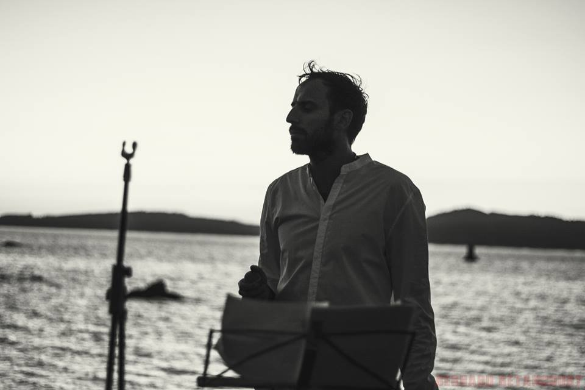

Structured Human Random AI
The main program feeds the AI with words from the poem and the AI predicts the next words.
Poetry on the mirror
In the foreground, the poem appears at the rhythm of the poet's reading and the AI interacts with the image captured by the device's camera.

The AI tree
Each branch of the tree represents a weight of each word, which is given according to the interpretation of the AI.
Superposition
This experiement looking for represent the superpesiotion of the ideas between human and his digital tween, and how the final concept preserve the value to transmit.
Interact with the AI
Write a title and the digital twin poet will generate a poem.
The poet

Marcos de la Fuente
Building my digital twin
The digital version of human thinking and feeling (the digital twin) is fed with all the work of the poet Marcos de la Fuente, also includ texts from authors who have influenced his writing. Thus, the machine (the AI) learns and creates this digital twin that, thanks to growing graphic technology, can interpret and generate the visual part of the poetic work, either in real time from the live work of the poet - recognizing his voice or his image -, or from the Proposals for words and verses written by the people who interact in the associated website, and that will be completed with the poetic style defined by the network neuronal of the poet. A poetic digital self that will evolve in successive Poetry proposals 3.1, 3.2 and etc.
Mariel Martinez
Coding developer
Expirementing with AI to enrich the creation of the poet.

Ismael Faro
AI Advisor
Distinguished Engineer at IBM.